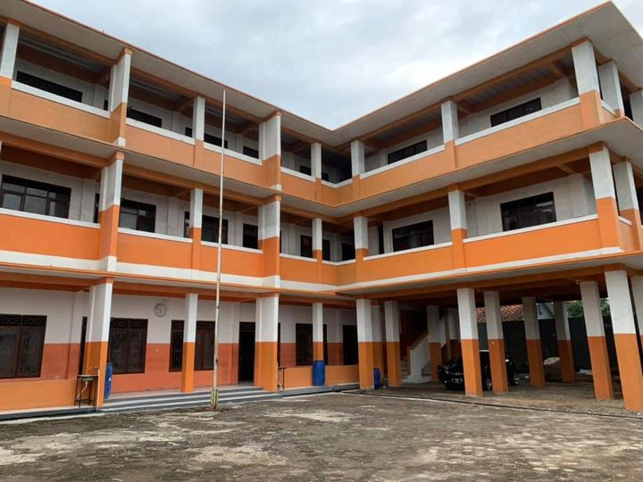
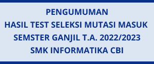

Lihat profil guru
Lihat Grup Facebook
Info pendaftaran
Informasi pendaftaran
peserta didik baru Tp 2022/2023
PENGUMUMAN MUTASI MASUK PESERTA DIDIK
BARU SMK INFORMATIKA CBI TP 2022 2023
CALON PESERTA SELEKSI MUTASI MASUK CBI
TEST Seleksi akan dilaksanakan pada hari Rabu 6 Juli 2022 pukul 08.00 Wib dengan menggunakan Link Zoom Meeting dan Google Form. Peserta harus sudah join Zoom Meeting 10 menit sebelum tst dimulai Link
Profil Sekolah

LIHAT PROFIL SEKOLAH
Profil Sekolah
VISI SMK INFORMATIKA CBI. A.Visi Sekolah "Menyiapkan tenaga ahli bidang teknologi informasi(TI) yang siap kerja,cerdas, kompetitif dan berakhlak mulia" B.misi Mengeksplorasi berbagai macam keahlian bidang TI yang berkembang dan dibutuhkan pasar berikut merancang isi, referensi dan metode pembelajarannya.

PENGUMUMAN HASIL TEST SELEKSI MUTASI MASUK SEMSTER GANJIL T.A. 2022/2023 SMK INFORMATIKA CBI